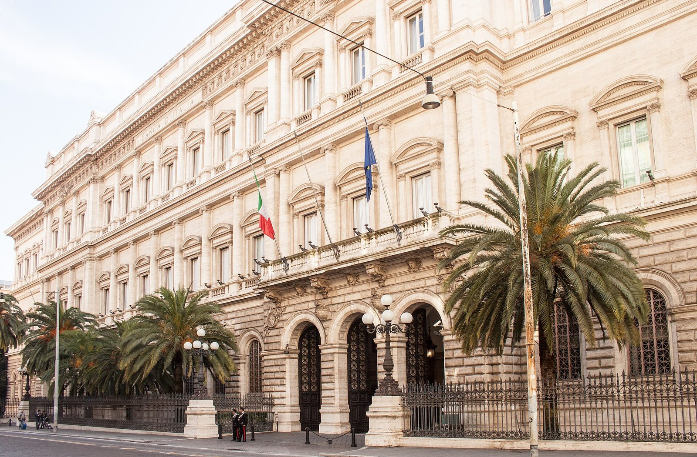

Perché conta: Lo spread BTP-Bund misura quanto l'Italia paga in più rispetto alla Germania per finanziarsi: a 118 punti base, ogni miliardo di debito italiano costo l'1,18% annuo in più. Le banche, grandi detentrici di BTP, perdono valore sul proprio portafoglio obbligazionario ogni volta che lo spread sale — ed è quello che è successo oggi.
Ottobre apre nel peggiore dei modi per la Borsa di Milano. Il FTSE MIB chiude a 50.238 punti, in calo del −2,21% rispetto alla vigilia, e registra la performance peggiore tra i principali mercati europei. Il DAX tedesco perde il −0,7% e il CAC 40 francese scende del −1,2%. Il mercato italiano è colpito da una doppia pressione: il rialzo dello spread BTP-Bund a 118,5 punti base e i timori su un eventuale nuovo rialzo dei tassi europei.
Lo spread BTP-Bund: cosa ha spinto il picco a 118 punti base
Il differenziale di rendimento tra il BTP italiano (Buoni del Tesoro Poliennali) e il Bund tedesco a 10 anni si è impennato di 15,6 punti base in una sola seduta, chiudendo a 118,5 punti base. Il rendimento del BTP decennale è salito al 4,69%, livello che non si vedeva da qualche settimana.
A pesare è stata la combinazione di diversi fattori: il rialzo dei prezzi del petrolio — con il Brent ancora sopra i 96 dollari — alimenta le preoccupazioni sull'inflazione europea. L'istituto di statistica ISTAT ha pubblicato dati sull'inflazione italiana che rimane elevata. Inoltre, la richiesta del governo Meloni a Bruxelles di nuova flessibilità fiscale è stata respinta dall'Unione Europea, aumentando l'incertezza sulla politica di bilancio italiana.
💡 Impara: Spread BTP-Bund (differenziale di rendimento)
Lo spread BTP-Bund è la differenza tra il tasso di interesse che l'Italia paga sui suoi titoli di stato a 10 anni (BTP) e quello che paga la Germania (Bund), il paese europeo considerato più sicuro. Si misura in "punti base": 100 punti base equivalgono all'1%. Quando lo spread sale, significa che i mercati chiedono un premio maggiore per finanziare il debito italiano rispetto a quello tedesco. Questo si traduce in costi più alti per lo Stato italiano — e indirettamente per i mutui e i prestiti delle imprese.
Il crollo delle banche: da UniCredit a Mediobanca
Il settore più colpito è quello bancario, che ha risentito direttamente dell'aumento dello spread. Le banche italiane detengono grandi quantità di BTP nel loro portafoglio: quando i rendimenti salgono (e quindi i prezzi delle obbligazioni scendono), il valore di quel portafoglio si riduce, peggiorando i bilanci.
| Titolo | Prezzo (€) | Variazione giorno |
|---|---|---|
| Mediolanum | — | −4,30% |
| Mediobanca | — | −4,23% |
| UniCredit | 79,53 | −4,07% |
| Intesa Sanpaolo | — | −4,02% |
| Fincantieri | 12,365 | +2,70% |
| Technoprobe | 33,08 | +0,18% |
Fincantieri: l'unico raggio di sole in una giornata nera
Nell'ambito di una seduta fortemente negativa, Fincantieri si distingue come miglior titolo del FTSE MIB con un guadagno del +2,70% a 12,365 euro. Il cantierista navale italiano, specializzato nella costruzione di navi militari e da crociera, beneficia dell'aumento delle commesse legate alla difesa europea, tema che il mercato continua a prezzare positivamente in un contesto geopolitico teso.
Il contesto macro: inflazione italiana e tensioni europee
La seduta si inserisce in un contesto macroeconomico complicato per l'Italia. L'inflazione rimane sopra il target della BCE, il petrolio (con il Brent ancora intorno ai 97 dollari) alimenta la componente energetica dell'indice dei prezzi, e il dialogo tra Roma e Bruxelles sulla flessibilità di bilancio si è incrinato. L'Unione Europea, come reso noto dall'ANSA, ha gelato la richiesta italiana con una risposta secca: "le concessioni sono già state fatte".
Questo cocktail di fattori ha spinto gli investitori internazionali a ridurre l'esposizione sui titoli italiani, amplificando il movimento al ribasso rispetto agli altri mercati europei.
💡 Impara: BTP (Buoni del Tesoro Poliennali) e le banche
I BTP sono i titoli di stato italiani a medio-lungo termine (da 3 a 30 anni). Le banche italiane ne detengono grandi quantità perché in passato erano considerati un investimento sicuro con rendimento decente. Quando i tassi salgono e i prezzi delle obbligazioni scendono, questo crea perdite — almeno "sulla carta" — nei bilanci bancari. Per questo le banche sono particolarmente sensibili alle variazioni dello spread: un aumento brusco come quello di oggi si traduce immediatamente in pressione sulle azioni delle banche in Borsa.
Il quadro completo dei mercati europei
| Indice / Indicatore | Valore | Variazione giorno |
|---|---|---|
| FTSE MIB | 50.238 | −2,21% |
| DAX 40 | — | −0,70% |
| CAC 40 | — | −1,20% |
| Spread BTP-Bund | 118,5 pb | +15,6 pb |
| BTP 10 anni (rendimento) | 4,69% | in rialzo |
Cosa osservare nelle prossime sedute
Gli investitori seguiranno da vicino l'evoluzione dello spread e i prossimi dati sull'inflazione europea. Un eventuale ammorbidimento del dialogo tra Roma e Bruxelles, o dati di inflazione più favorevoli del previsto, potrebbe stabilizzare la situazione. Al contrario, il persistere delle pressioni energetiche e l'incertezza politica potrebbero tenere lo spread sotto pressione ancora per qualche tempo.